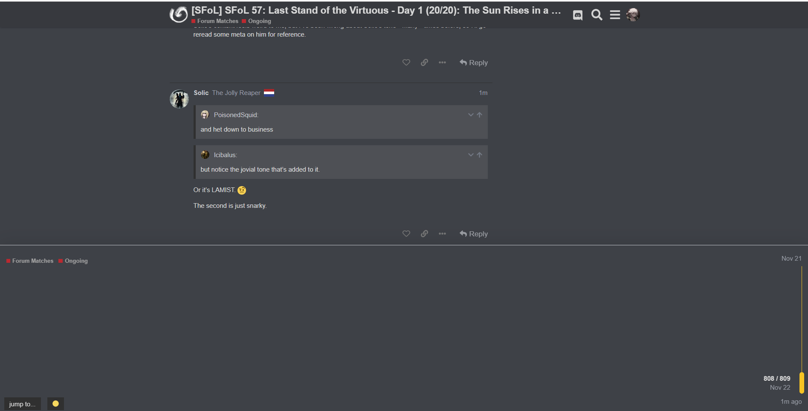

That’s false, fairly sure.
Well I don’t care. Produce content or be lockscum.
The only time I’ve done something Day 1 was Looming Threat
And you were town there. Lockscum proven. 
TeChNicALlY, LoCksCum Is A GoOD ThiNG
Okay, that’s a joke.
No. It’s because I was utterly convinced Priestess was scum.
I’m gonna go read then because otherwise Solic won’t leave me alone. (I know I said I would earlier but I got busy).
I’ll post my reads soon.
1 Like
Solic’s content feels weird to me, but I’ve been wrong about Solic’s tone * many * times before, so I’ll go reread some meta on him for reference.
Or it’s LAMIST. 
The second is just snarky.
Solic, that’s literally not LAMIST
how many times do i have to explain this

HELP I BROKE THE FORUMS
So now Derps talks about his claim for a second time. This time, people are starting to take notice
Now this is the start of going deep into those that want to kill Derps. He believes the claim, but he’s letting the Neuts out thought process decide his actions. Each Alch specialty is different, so it’s not impossible to determine his alignment. If he healed someone, he’s siding with us, if he framed someone and it’s been found out, he’s siding with scum and that’s when we need to get rid of him. Neut Alch does have Crimson potion too though… hmm

sigh
LAMIST is a form of TMI where you emphasise your own “villageriness” in a way that makes it clear you did it on purpose and you’re a wolf faking content.
Believing you’re a villager and emphasising the goals of villagers can be wolfy, but in the case of Squid it’s not, because it’s a nulltell in her meta, as you well know.
So you’re scum/townreading Soul/Arete/Vulgard|Ici?
Bruh, let me finish
1 Like
Wasn’t it just once? LOTRFM?
Carry on. 
firstly i managed to figure out you were a villager then
there were also some psychonerik games where i got you wrong, if my memory serves you correctly
Ritual Mafia… good times.